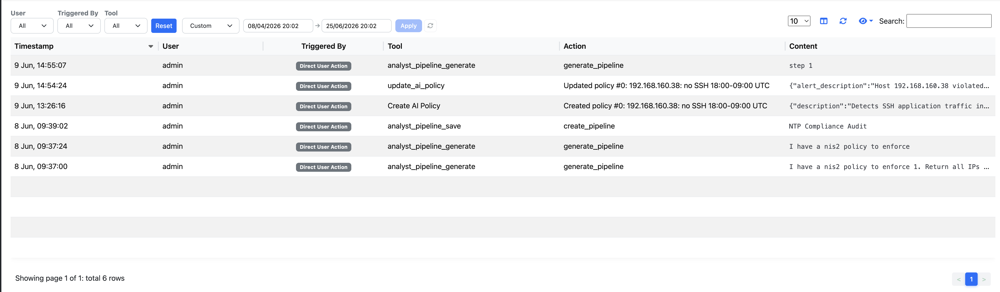

Журнал аудита действий
nAnalyst ведет подробный журнал аудита всех действий, предпринятых пользователями через интерфейс чата и агентом AI автономно. Это обеспечивает подотчетность в стиле SOC2 для всех операций с помощью AI.
Что записывается
Каждый раз, когда nAnalyst предпринимает действие, изменяющее состояние ntopng, создается запись аудита. Зарегистрированные действия включают в себя:
Добавление скрипта активного мониторинга
Создание или изменение сетевой политики
Регистрация нового правила оповещения
Отключение звука или создание исключения из оповещений (хост, домен, сертификат)
Любой другой вызов инструмента, который записывает в конфигурацию ntopng или базу данных.
Каждая запись аудита фиксирует:
Действие - что было сделано (например,
add_active_monitoring_script)Актер — пользователь ntopng, инициировавший сеанс
Тип инициатора — было ли действие запрошено пользователем или предложено и выполнено агентом самостоятельно
Содержание вызова инструмента — точные параметры, передаваемые в инструмент
Временная метка — когда произошло действие
Идентификатор сеанса — обратная ссылка на полный разговор, который привел к этому действию
Просмотр журнала аудита
Журнал аудита доступен из панели наблюдения nAnalyst. Его можно фильтровать по:
Пользователь
Тип действия
Временной диапазон
Инициатор (по запросу пользователя или автономный агент)
Каждую строку можно расширить, чтобы отобразить полную полезную нагрузку вызова инструмента.

nЖурнал аудита аналитика
Вина и атрибуция
Журнал аудита отвечает на два вопроса подотчетности:
Кто это сделал? — каждое действие приписывается аутентифицированному пользователю ntopng, даже если действие было выполнено агентом автономно по инструкции пользователя.
Почему это произошло? — идентификатор сеанса связывает действие с полным разговором, включая исходный вопрос пользователя, который побудил агента выполнить действие.
Это делает nAnalyst готовым к аудиту для сред, требующих учета изменений, таких как операции SOC, аудит соответствия и проверки после инцидентов.
Примечание
Журнал аудита предназначен только для добавления. Записанные в нем действия нельзя изменить или удалить через пользовательский интерфейс nAnalyst. Для изменения записей аудита потребуется административный доступ к базе данных.
Варианты использования соответствия
Доказательства SOC2 - продемонстрировать, что все автоматизированные изменения в сети имеют отслеживаемого человека-инициатора.
Вскрытие инцидента — восстановить последовательность действий с помощью AI во время инцидента
Управление изменениями — просмотрите, какие конфигурации nAnalyst изменил в течение заданного временного интервала.
Мониторинг внутренних угроз — обнаруживать необычные закономерности в использовании инструмента AI конкретными пользователями.